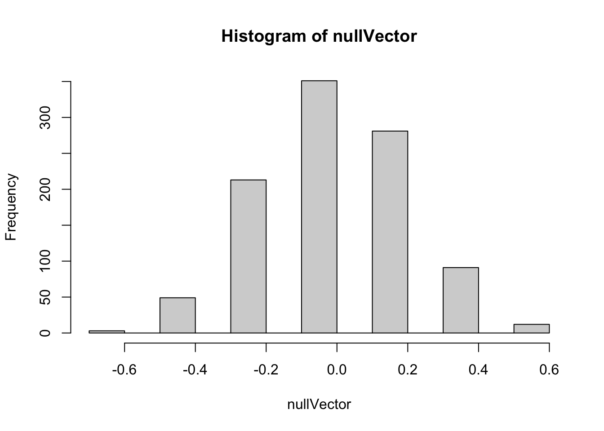

Permutation Testing, and the intuition of the Null hypothesis, with Base R
hypothesis testing
permutation
R
statistics
Author
Jon Minton
Published
July 11, 2024
In this post I’ll cover the intuition of permutation tests through a little toy example. In a follow-up post I’ll discuss how this intuition can be implemented (and made a bit easier) using the infer package.
Core intuition for permutation tests
Let’s try to understand the intuition of permutation tests using a (rather boring) story:
Imagine you have two types of index cards: red cards and blue cards.
Say there are 12 red cards and 8 blue cards, so a total of 20 cards.
On each of the cards is a value. Let’s say it’s a binary value: 1 (maybe for a ‘success’) or 0 (a ‘failure’).
Let’s say the values from the red card came from flipping a specific coin, Coin A, 12 times, and writing a 1 on a blank red index card if the coin came up heads, and 0 on a blank red index card if the coin came up tails.
The values on the blue cards came from flipping a different coin, Coin B, 8 times, and doing the same thing, but with blue cards instead of red cards.
What you want to know is whether Coin A or Coin B are different, i.e. one has a different probability of producing heads than the other one. However, you don’t have access either Coin A or Coin B. The only information you have to go on is the 20 index cards: 12 red, 8 blue.
How do you go about determining if the two coins are different, when you don’t have access to either coin, and all you have are the 20 index cards?
One approach is to perform permutation tests. This is a way of using computation to produce a Null Distribution, meaning a distribution of some kind of summary statistic that you would expect to observe if there were really no difference between Coin A and Coin B. This Null Distribution is a distribution of summary values that you would expect to observe if the Null Hypothesis were true, where the Null Hypothesis is that Coin A and Coin B behave in exactly the same way. You then compare the corresponding summary statistic from the observed data against this Null Distribution. If the observed summary statistic is far from the range of summary statistics, then you have more reason to Reject the Null Hypothesis, which generally corresponds to evidence for the Alternative Hypothesis, which in this case is that Coin A and Coin B are different.
The way you would manually perform a permutation test (without computers) in this example is as follows:
You get a big box of only red index cards, and a big box of blue index cards, all of which are blank.
From the big box of red index cards, you take 12 cards, and put them into a little pile.
From the big box of blue index cards, you take 8 cards, and put them into the same pile containing the 12 red index cards.
You then randomly shuffle the 20 cards with values written on them (your data), and place this randomly shuffled pile face down.
You take the top card from the data pile, turn it over, and write its value on the first card in the small pile of 20 blank cards you’ve just made. You then take this now-not-blank card from the small pile, and place it next to the pile of now 19 blank cards.
You then repeat with the next card in the data pile, and the next card in the small blank card pile, until all cards in the blank card pile have had a value (1 or 0) written onto them.
You then repeat steps 2 through 6 a large number of times: say another 999 times. At the end of this, you now have one real dataset, comprising 20 index cards - 12 red, 8 blue - and 1000 ‘fake datasets’, i.e. 1000 piles of 20 index cards each - 12 red, 8 blue - which also each have 1 or 0 written on them.
After you have done this, you calculate a summary statistic for both the one real dataset, and the 1000 ‘fake datasets’. Say this is the difference in the proportions of 1 in the red subset of cards, and the blue subset in cards. You calculate this for the real dataset, and call it the observed statistic. And you also calculate it for each of the 1000 fake datasets, which provides your Null distribution for this same statistic.
Finally, you compare the observed statistic (from the real dataset), with the Null distribution of summary statistics. If the observed statistic is somewhere in the middle of the Null distribution, there’s little reason to reject the Null Hypothesis; if it’s quite far from the Null distribution, there’s much more reason to reject the Null Hypothesis.
As you can tell from the description above, this would be quite a slow approach to making a Null distribution if we were to follow the steps manually. This is why historically many of the approaches for producing Null distributions that you might be familiar with involve algebra-based theoretical distributions. In the example above a classic way of calculating the Null distribution would be using the Chi-Squared distribution. Historically, it was much quicker for one person to figure out the algebra once, and perform calculation based on the algebraic solution, than to perform a permutation test. These days, even if we have an algebraic solution, it can still be as quick or quicker to perform a permutation test.
Let’s actually make the dataset I’ve described above (using a random number seed so the answers don’t change). Let’s say in our example the true proportion for Coin A is 0.55, and for Coin B it’s 0.50. (Something we’d never know in practice.)
Code
set.seed(7) # Random number set.seeddraws_A <-rbinom(n=12, size=1, prob=0.55)draws_B <-rbinom(n=8, size=1, prob=0.50)card_colour <-c(rep("red", 12),rep("blue", 8))real_data <-data.frame(card_colour = card_colour,outcome =c(draws_A, draws_B))real_data
card_colour outcome
1 red 0
2 red 1
3 red 1
4 red 1
5 red 1
6 red 0
7 red 1
8 red 0
9 red 1
10 red 1
11 red 1
12 red 1
13 blue 1
14 blue 0
15 blue 0
16 blue 0
17 blue 1
18 blue 0
19 blue 1
20 blue 0
In this example, what is the proportion of 1s in the red card subgroup, and the blue card subgroup?
In this example the proportion ‘heads’ in the red subgroup (from coin A) is 0.750, and in the blue subgroup (from coin B) happens to be exactly 0.375. This means the difference in proportions is 0.375.
How would we use a permutation test to produce a Null distribution of differences in proportions between the two groups?
What does the distribution of differences look like?
Code
hist(nullVector)

Here we can see quite a wide range of differences in proportions are generated by the permutation-based Null distribution. We can use the quantile function to get a sense of the range:
Here the median value of the proportion of differences is -0.042. Half of the values are between -0.025 and 0.0167; 90% of the values are between -0.458 and 0.375, and 95% of values are between -0.458 and 0.375.
For reference, the real observed difference in proportions is 0.375. This seems to be at the far right end of the Null distribution. We can calculate what is in effect a p-value, of the probability of seeing a value as or more extreme than the observed value from the Null distribution, by counting up the proportion of Null distribution values that were as or more extreme than the observed value:
So, the proportion of times the Null distribution generates a value as great or greater than the observed value is about 10%. This wouldn’t meet conventional thresholds of statistical significance, which would be less than 5% of values being this or more extreme. However it does seem from the data that it’s more likely than not the two coins may be different. (And we know, as a fact, the two coins are different, because we made them to be!)
Finally, let’s use the Chi-squared test to try to answer the same sort of question1:
First we make a cross-tab out of the real data:
Code
xtab <-xtabs(~card_colour + outcome, data = real_data)xtab
outcome
card_colour 0 1
blue 5 3
red 3 9
And then we pass the cross-tab to the function chisq.test:
Code
chisq.test(xtab)
Warning in chisq.test(xtab): Chi-squared approximation may be incorrect
Pearson's Chi-squared test with Yates' continuity correction
data: xtab
X-squared = 1.467, df = 1, p-value = 0.2258
Here the function produces a p-value that’s even larger than the approximately 0.10 value from the permutation approach, giving even less confidence that there may be a difference between the two groups. However it also gives a warnings that the assumptions made in producing this p-value may not be appropriate. In particular, two of the four cells (so 50% of the cells) in the cross-tab have values less than 5, whereas a rule-of-thumb when calculating a Chi-squared statistic is that no more than 20% of cells shoudl have values less than 5.
An alternative to the Chi-Square test, when there are small sample sizes, is the Fisher Exact test. This is more computationally intensive than the Chi-Square test, but can be more appropriate when there are small sample sizes. Unlike with the Chi-Square test, we can perform one sided as well as two sided tests using this method, with the default being two sided. Let’s see what this produces:
Code
fisher.test(xtab)
Fisher's Exact Test for Count Data
data: xtab
p-value = 0.1675
alternative hypothesis: true odds ratio is not equal to 1
95 percent confidence interval:
0.5182846 52.4512095
sample estimates:
odds ratio
4.564976
Here the p-value is slightly smaller than for the Chi-squared test, but slightly larger than for the (one-sided) permutation based p-value. Let’s see what the corresponding p-value is if we specify we want a one-sided test, by setting the alternative argument to "greater":
Code
fisher.test(xtab, alternative ="greater")
Fisher's Exact Test for Count Data
data: xtab
p-value = 0.1132
alternative hypothesis: true odds ratio is greater than 1
95 percent confidence interval:
0.6835727 Inf
sample estimates:
odds ratio
4.564976
This time, we get a p value of 0.113, which is much closer to the permutation-based one-sided p-value of 0.103 we derived previously.
Summary
In this post we’ve used only Base R functions to understand the intuition and implementation of permutation based tests for trying to either reject or not reject the Null hypothesis. Permutation methods, like bootstrapping, fall under the broader umbrella of resampling methods, and are immensely versatile and applicable to a great many types of data and question.
Approaches like these are sometimes referred to as ‘Hacker Stats’, as being able to implement them correctly depends much more on having some computer science knowledge - such as for loops or equivalent - than much knowledge of statistical methods and tests. In this example I happened to know of a couple of classic conventional statistical tests that were broadly appropriate to the type of question we were trying to answer, but a reasonable programmer, once they understand the intuition behind the approach, would be able to produce a p-value and Null distribution in the way I did, and get to roughly the right answer even without knowing or implementing either of the classical statistical methods shown here.
From my perspective, I don’t think it’s a case of either-or when it comes to which kind of approach we use - Hacker Stats or ‘Proper’ Stats. Indeed, I think it’s from these simulation based examples, where we can run a little experiment and see what happens, that we can develop the kind of deep intuition about the Null hypothesis - and so p-values, statistical significance, and the bread-and-butter of a lot of conventional statistical learning - that we need to be effective statisticians. It’s likely only by historical accident, in my view, that Hacker Stats are often only taught later in courses, and classical approaches taught first. Resampling methods can be both the Alpha of statistics, because they help to develop the deep intuitions through clear examples that don’t rely on much algebra, and also the Omega of statistics, because some quantities of interest just aren’t easy (and in some cases may be impossible) to derive analytic solutions to.
Footnotes
Technically, the Chi-Squared test here is two sided, looking for much smaller and much higher values than the Null distribution, whereas in the example below where we used a one-sided test.↩︎